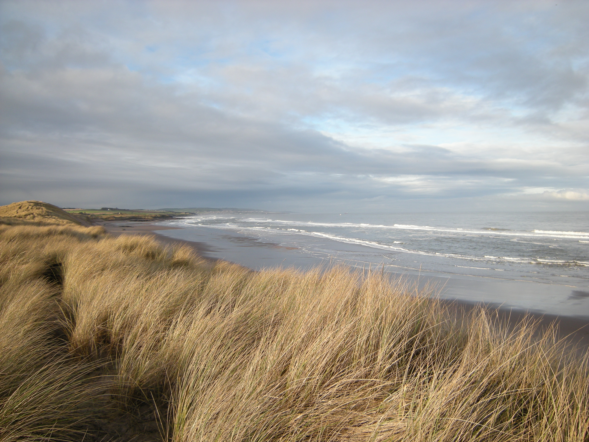
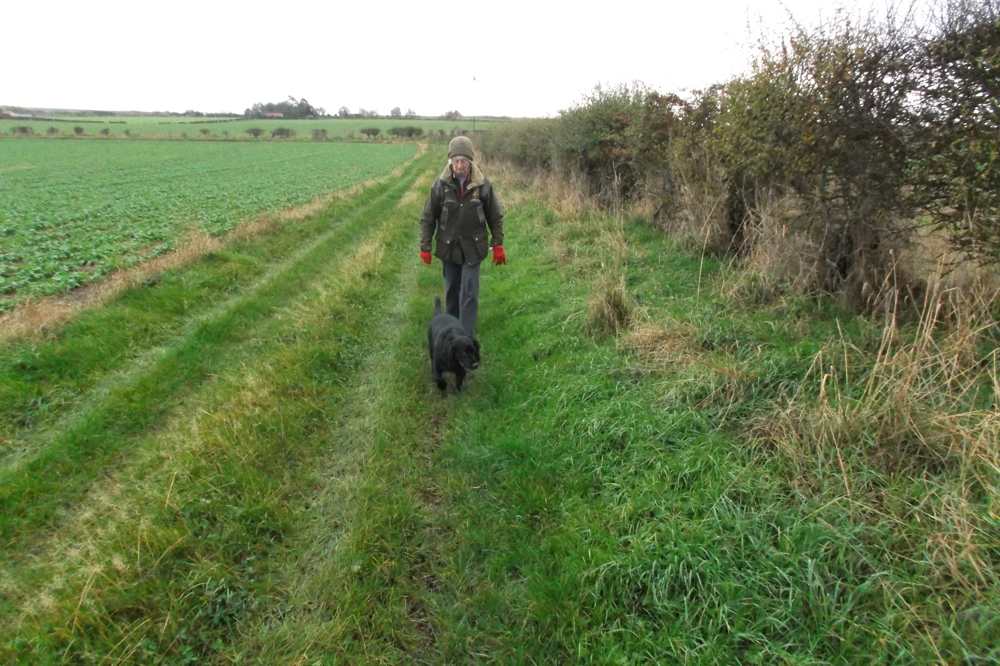
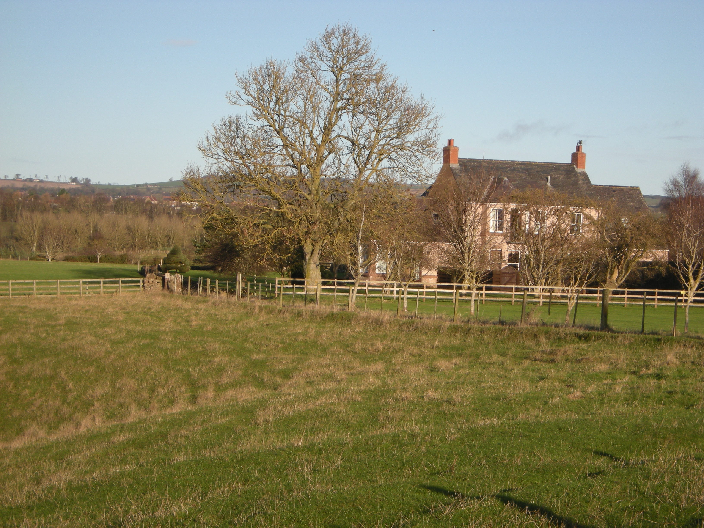
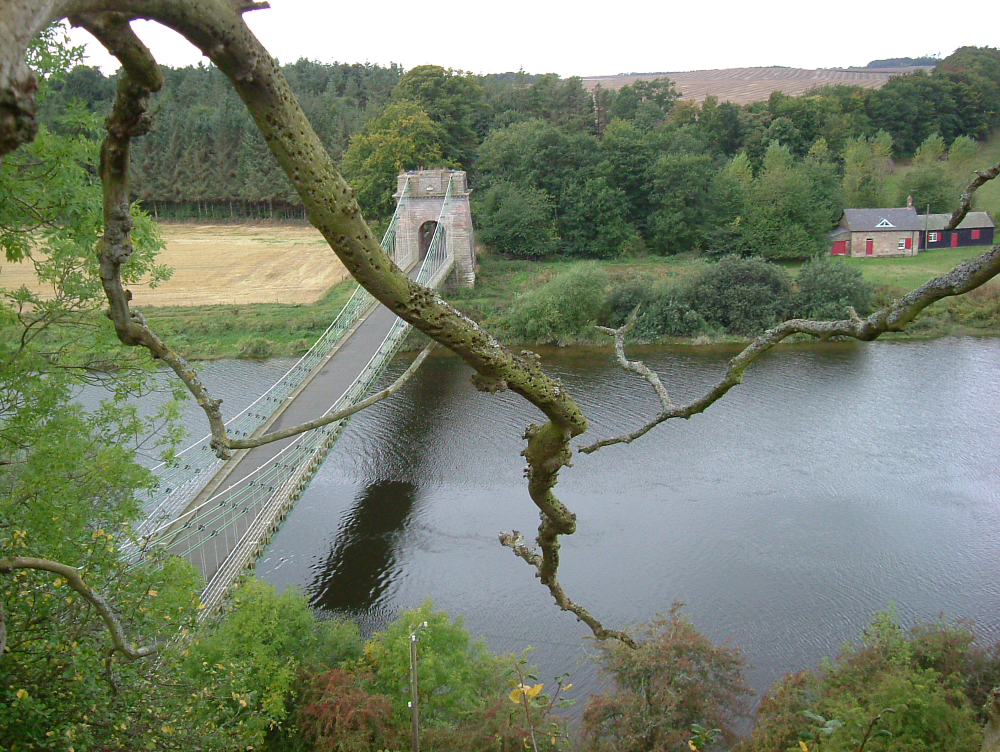
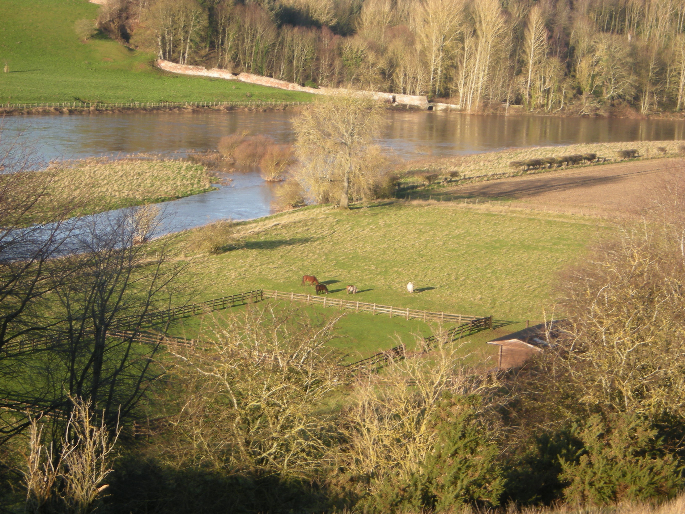

Riverainabouts
So where is Riverain is not so hard to describe when the areas around show you. Great woodland and fields, sweet back roads between fantastic places that you don't have time to be in enough and so photos may well do the trick. Note the photos may be recent but are older than the date the page was made. It serves as an example of how as a template a days photos, a week or months can be collated quickly by such a reference right at the top of the page.
At least they provide a record either way and so far there are 3 riverain abouts sets but it could need new references when reaching 30. Currently it has tagged on the pathto first github hosted page from a different address, but better probably to call it one address after this one.
Like Algebra I could not decide as to whether this was increasing area nearby or not and decided it is lots of overapping area. I am really quite annoyingly interested in tables and such now that they serve data organising methods from my point of view.
Please click on any photo to move it to the main frame and with a description




